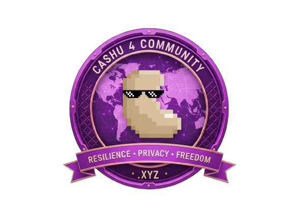
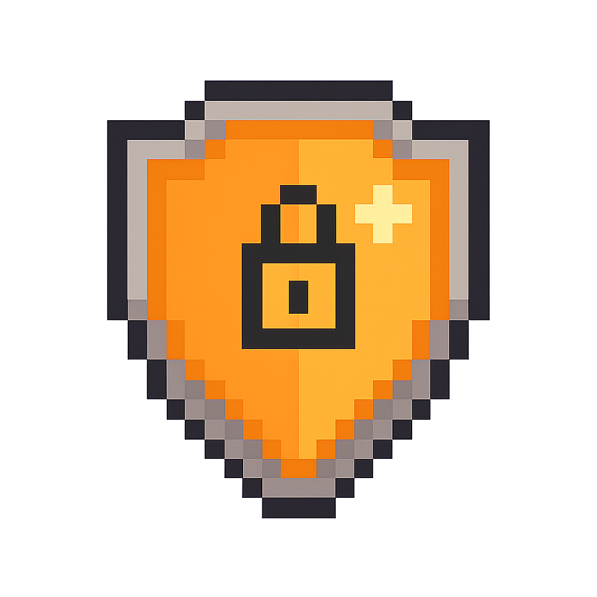
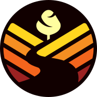
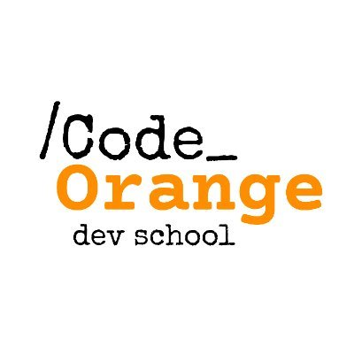
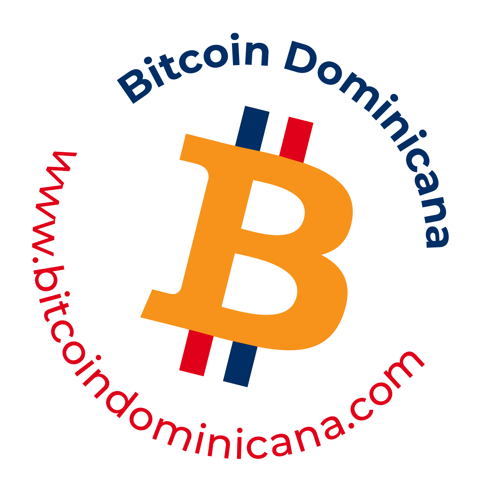

Cashu
para
Soberanía Comunitaria

Sistemas de pago privados y resistentes a la censura para comunidades bajo regímenes autoritarios.

Resistencia Privacidad OfflineProblemas
Vigilancia Financiera
En regímenes autoritarios de América Latina y más allá, las comunidades enfrentan vigilancia financiera, censura y acceso restringido a sistemas de pago globales.
Infraestructura Inestable
Las soluciones tradicionales de Bitcoin fallan debido a conectividad poco confiable, inestabilidad eléctrica y la necesidad de protección de privacidad contra la vigilancia estatal.
Falta de Mints Cashu
Prácticamente no existen mints de Cashu para servir a comunidades reales bajo presión autoritaria, limitando el acceso a herramientas de soberanía financiera.
Infraestructura Soberana
Nuestra Solución

Nodos neutrinos administrados por cada comunidad para máxima autonomía
Cada comunidad tendrá su propia instancia LNbits personalizada y soberana
Mints Cashu con implementación Nutshell para transacciones privadas, seguras y resistentes a censura

Administración intuitiva del mint con herramientas de gestión completas utilizando Orchard
Impacto Esperado
Resistencia a la Censura
Sistemas de pago que mantienen funcionalidad durante restricciones gubernamentales o apagones de internet.
Privacidad Financiera
Protección de datos financieros para activistas y miembros comunitarios contra vigilancia estatal.
Enfoque África & LATAM
Priorizando regiones donde la libertad financiera está más amenazada por gobiernos autoritarios.
Modelo Replicable
Documentación abierta para que cualquier comunidad pueda implementar su propio sistema soberano.
Comunidades Seleccionadas
10 comunidades construyendo soberanía financiera
BTC Shule
🇧🇮 Burundi
Colombia P2P
🇨🇴 Colombia
Bitcoin Chama
🇰🇪 Kenia
Bitcoin Bolivia
🇧🇴 Bolivia
ONG Bitcoin Argentina
🇦🇷 Argentina
Satoshi Somos Todos
🇩🇴 República Dominicana

Code Orange
🇮🇩 Indonesia
Bitcoin Lille
🇫🇷 Francia

Bitcoin Dominicana
🇩🇴 República Dominicana
Bitcoin Hanbit
🇰🇷 Corea del Sur
Cronograma del Proyecto
Preparación
Nov 2025Selección comunidades y setup inicial
Infraestructura
Dic 2025Despliegue nodos y testing
Implementación
Ene-Feb 2026Despliegue y capacitación
Educación
Mar-Abr 2026Manuales y autonomía
Código Abierto
May 2026Documentación pública actualizada
Evaluación
Jun 2026Análisis de impacto
Soporte
Jul-Oct 2026Independencia total
Preguntas Frecuentes
¿Qué es Cashu y por qué es diferente?
+Cashu es un protocolo ecash que permite transacciones Bitcoin completamente privadas y offline. A diferencia de Bitcoin on-chain, Cashu no deja rastros en blockchain y puede funcionar sin conexión a internet.
¿Cómo Cashu protege contra la censura gubernamental?
+Los mints Cashu son imposibles de censurar porque operan de manera distribuida y las transacciones no requieren validación externa. Los gobiernos no pueden rastrear ni bloquear pagos individuales.
¿Qué requisitos debe tener mi comunidad para aplicar?
+Necesitas una comunidad activa donde se esté construyendo o exista una economía circular Bitcoin existente y líderes comprometidos. Estar bajo presión autoritaria es un plus que priorizamos, especialmente donde la privacidad financiera es crítica.
¿Qué soporte técnico incluye el proyecto?
+Incluye infraestructura completa (nodo Lightning, LNbits, mint Nutshell), capacitación para 5+ líderes por comunidad, documentación detallada y soporte durante 12 meses hacia la independencia total.
¿Es realmente seguro para activistas?
+Sí. Cashu proporciona privacidad perfecta a nivel de protocolo. Ni el mint ni observadores externos pueden rastrear quién paga a quién o por cuánto. Es matemáticamente imposible de comprometer.
¿Qué pasa si se corta internet en mi región?
+Los tokens Cashu pueden transferirse completamente offline usando códigos QR, USB, o incluso papel. Cuando la conectividad se restaure, las transacciones se sincronizan automáticamente.
¿En qué se diferencia Cashu de Bitcoin (Onchain) tradicional?
+Bitcoin tradicional requiere conexión constante, deja trazas rastreables en blockchain. Cashu permite transacciones completamente offline, ofrece privacidad total con ecash y funciona con mints independientes.
¿Cashu revela información sobre mis transacciones?
+No. Las transacciones en Cashu están diseñadas para la privacidad total: no revelan identidades, cantidades ni patrones de gasto. Ni siquiera el mint puede ver esta información gracias a las técnicas criptográficas de ecash.
¿Por qué es imposible de bloquear por gobiernos?
+Cashu es resistente a censura porque funciona de manera distribuida a través de mints independientes. Los gobiernos no pueden bloquear transacciones individuales ya que estas pueden ejecutarse offline y son criptográficamente privadas.
¿Tu comunidad enfrenta presión autoritaria?
Únete a las 10 comunidades que recibirán infraestructura privada y resistente a la censura para proteger su soberanía financiera
Aplicar para Resistir